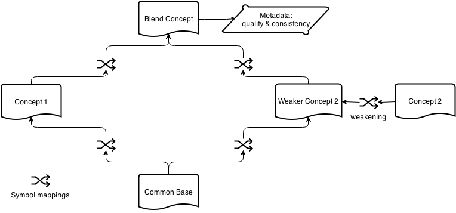

# Coinvent Architecture
Author: Daniel, with input from Ewen and Mihai, and feedback from
Status: Final Draft, due for delivery in June.
Version: 0.9.3
This document presents the archictectural design for the integrated Coinvent system.
Please first read:
Coinvent covers several domains and use-cases. The following description may be taken as typical of planned usage, but not normative.
In a typical session, the user browses & selects two concepts from the rich background of domain concepts. A blended concept is then developed, which may be automatic or interactive. Examples of the concept are generated (again, either automatically or interactively, depending on the capability of the automatic software). Finally, the concept's quality is evaluated based on the examples.
This is illustrated in the UML sequence diagram below:
The object type at the heart of Coinvent is the Blend Diagram. The specification below is intentionally broad to support several use-cases. The Blend Diagram is illustrated in the flowchart diagram below:

Crucially we must support blend diagrams which are "works in progress". The high-level process of developing a new blended concept is:
Hence we talk of a Blend Diagram in Progress to allow that blends may be developed step-by-step and iteratively.
Concepts are defined in CASL or OWL. Mappings between concepts are defined in DOL. Metadata is also defined in DOL. The Blend Diagram may be a single file, or several linked files, using DOL's support for urls.
A Blend Diagram consists of:
The Blended Concept may be a colimit, but it does not have to be. The Base Concept may be found via anti-unification, but it does not have to be.
A Blend Diagram in Progress is simply a Blend Diagram where any part may be missing or incomplete, and Concepts do not have to be consistent.
A Coinvent system will be made up of the following components. A component can be "manual", which means a human being provides the result (using a web interface).
An interface through which the user drives the system. This will be a web-app, i.e. a browser-based ajax app.
A default user interface (UI) will be built on established toolkits, including Bootstrap, jQuery, and underscore.js.
As the project progresses other domain-specific UIs may be developed -- e.g. a music viewer & player, or a child-friendly UI if we cover the fictional-beasts domain. The architecture setup deliberately keeps the UI separate, accessing the processing components via the APIs, so that other UIs can be built and by anyone.
Default implementation: To be developed.
Default implementation: HETS
As well as producing blends, this component also outputs proof obligations.
The Blender does not have to compute consistency. This is the job of the Concept Scorer.
The HETS API is currently still in development, and improvements are needed before it fits all requirements. Specific open issues are logged here: https://github.com/coinvent/coinvent/issues?labels=HETS&page=1&state=open
This component finds a common base theory, and mappings to the input concepts. That is, it fills in the bottom half of the blend diagram. The common base is not always unique -- there may be a choice of several.
A common base and mappings defines an analogy between the concepts. This component does not itself calculate the blend. However if a push-out based /blend component is used (as we envisage), then the base and mappings do uniquely determine the blend concept.
Default implementation: HDTP, which works via anti-unification.
Required work: HDTP currently uses a custom Prolog-based format. To plug into Coinvent (or HETS without Coinvent), a translation layer will be developed so that HDTP can take in OWL or CASL.
Note: HDTP will remain stateless. It will not itself manage sessions or run a web-server.
Initial implementation: manual
Since the colimit operation (and blending in general) can generate inconsistent blends, it may be necessary to weaken the input theories until a consistent blend is found.
The Amalgams team will lead on this, exploring the generalization operation for amalgams described in [4], and developing a stand-alone Theory Weakener (TW).
The TW will not be capable of computing colimits itself; therefore it requires a feedback loop with HETS.
In case the colimit is inconsistent, the TW analyzes the input theories and the inconsistencies in the blend and weakens the theories based on this information by removing sentences from the input theories. This removal will be based on heuristics known from amalgam reasoning [4]. The whole procedure is repeated until a consistent colimit is found.
For the implementation of the TW, we are currently investigating using an Answer Set Programming (ASP) approach, calling on online ASP solvers. This allows us to (i) rapidly implement prototypes, (ii) make use of the highly optimized search problem algorithms that drive modern ASP solvers [2], and (iii) use the advantages of online ASP solvers like oclingo [1] that will re-use partial solutions of earlier weakenings. Towards this, a weakening operation is modeled as sequence of theory transitions, based on atomic operations that each affect the different types of sentences (eg. SubClassOf , EquivalentTo, ObjectProperty, etc. for OWL) within theories. Perceiving the theory weakening as a sequence of theory transitions also allows us to exploit the iterative problem solving capabilities of modern ASP solvers and to re-use coding strategies known from other kinds of state transition based problems that are typically modeled in ASP [2].
Default implementation: Manual
This is a key part of creative blending, especially around evaluating a concept. It is noticeable that when people learn and evaluate concepts, they often do so via examples.
The meaning of "example" is domain specific.
In mathematical theories, an example is a model, which is itself a theory. E.g. in the complex numbers case-study (c.f. https://github.com/coinvent/coinvent/tree/master/HETS/complex_numbers), an example is the refined theory where i^2 = -1 has been added to provide a constructive formula for the existential axiom \forall vectors x,y, \exists vector z, x*y = z (note: in the .dol file, this existential axiom is implicit in * being a total function).
In musical theories, an example is a piece of music conforming to the theory.
Automated implementations will also be domain specific, and may not be possible in all domains.
Blending can lead to inconsistent concepts. HETS has support for using various theorem provers to check for consistency. However detecting inconsistency is not always easy. In the complex numbers example, it has been found to require manually guided proofs.
A key part of creativity is judging the quality of the outputs; discarding low-value concepts, and selecting valuable ones. How to do this is one of the research questions this project will explore. HR has automatic scores for detecting interesting concepts, which it would be interesting to incorporate.
Default implementation: Manual
Must provide save and load over http.
Note that most of the other components do not depend on a dedicated storage component. They can work with concepts stored on any server, as long as the format is correct and the concept can be identified by url. The User Interface does require a file storage component to store blend diagrams as they're modified.
Default implementation:
As discussed in the architecture section, some of the system tasks are not suitable for a fast blocking API. These tasks will create jobs, which run on the server until complete. The /job component provides an API for fetching information on the state of the job queue and a specific job. This allows the web-portal (or other user interfaces) to see the state of a blend, and a way to report on any errors.
Requirements:
Requirements (1) and (2) above suggest a loose coupling between components. The use of http-based APIs is an established way of achieving this. In particular, http-based APIs with a REST-like setup (i.e. the url follows a simple readable structure) and using JSON to encode data are now becoming the standard for modern software development.
JSON will provide a wrapper for API-level information. JSON is not part of the file format for Blend Diagrams. Blend Diagrams are written in DOL + OWL or CASL, and sent within a JSON packet as JSON strings.
An added benefit of this architecture is that it provides flexibility regarding the hardware infrastructure. The components of the Coinvent system may be run either on a single server, or across multiple servers.
To provide flexibility, especially across varied domains, the architecture is organised into separate components. This document describes default implementations for each component. However any component can be provided by an alternative implementation. Any system which fits the API for a Coinvent component slot, can fill that slot.
We envisage certain components will indeed have multiple implementations: HETS and HR3 are both candidates for the /blend and /consistency slots. The /model slot will benefit from domain-specific implementations (e.g. a music generator).
With the architecture supporting different implementations for components, the system requires a setup describing which implementations to call.
Each component has a default implementation, which will be specified in a config file.
The Social Creativity strand of the Coinvent project requires that different setups can be run and interact. In order to support this from within one server, we allow that a Blend Diagram in Progress can carry meta-data about which component implementations to call (if different from the defaults). This meta-data might include implementation-specific configuration parameters.
Requirement (3) relates to research users, who need to run repeatable concept development sessions. This requirement is met in this architecture by scripts which drive the API. Such scripts would most naturally be developed in javascript, perhaps using a test-runner. Indeed, the test scripts we develop as part of software QA will provide templates for scriptable use.
Where steps involve systems such as the interactive theorem prover Isabelle, it is an open question how we script such systems within Coinvent.
"Calculation" software such as HDTP will be incorporated into this framework using a server which "wraps" the low-level software. E.g. the other components connect to the HDTP-server over http, and the server manages calling HDTP itself.
Calculation software will be stateless. This is simpler, and avoids tying the low-level components to the bigger system.
There's the question of: paging through results. E.g. HDTP can produce multiple outputs for some inputs. If we have one mapping & we want a 2nd or a 3rd -- how do we do that?
This will be handled via input flags, and just repeating the calculation asking for more outputs (i.e. iterative deepening).
The overall system will be stateful, because being stateful is the most natural way to support several required features:
The state would be handled at the top level. The components (HDTP, HETS-as-a-colimit-calculator, etc) are used in a stateless manner.
The goal of the Coinvent system is to be semi-automatic. Certain components -- such as evaluating musical quality -- are best handled manually, at least in this project. There are also components, such as consistency checking, where a fully-automatic solution is desirable, but for mathematically difficult theories, this may not be possible. We therefore support a manual / interactive mode for each component.
This works as part of the actor model. Certain actors correspond to systems, e.g. the "hets" user connects to the HETS system. Other actors correspond to people. For these actors, the UI will show a list of open job requests sent to them, and an interface for responding to a job. The user is then free to call on any outside tools they wish (e.g. working via another theorem prover) in order to complete the job.
These responses will be stored, so that sessions can be re-played.
Requirements:
This means a standard call/response would timeout. We therefore adopt an actor / queue based pattern (see https://en.wikipedia.org/wiki/Actor_model).
Each top-level component is an actor, which can send and receive messages to other actors. Each API request is marked as either fast or slow:
| Default User Interface | ||
| AJAX | jQuery | underscore templates |
| Web browser | ||
| http: JSON format REST API | ||
| Java web-service wrapper | ||
| HDTP | Files | HETS server1 |
| SWI Prolog2 | Git3 | Theorem Provers |
| OS: Linux (Ubuntu) | ||
Coinvent will focus on human-readable text-file formats. A couple of formats for concepts will be supported, with the DOL language used to describe the connections between concepts.
DOL (Distributed Ontology, Modeling and Specification Language) is a language for describing how ontologies connect. DOL is currently in development by Till Mossakowski's group. It is used by the HETS system. This integration with HETS makes it a good choice for Coinvent.
DOL is both larger than we need, and does not provide a couple of features we require. So we specify a modified version of DOL. We will work with the DOL team aiming to converge on a true subset of DOL.
Coinvent does not need all the features of DOL, and so we specify a reduced subset of DOL which should be used. Sticking to a smaller set reduces the learning curve for new Coinvent users.
Briefly, the supported symbols are:
logic Specify the Concept language, e.g. logic OWLontology Start defining a Concept.end Finish defining a Concept.view Specify a mapping between Concepts, e.g. view MyView : A to B =with Start of a symbol mapping within a combine statement.combine Compute the colimit, e.g. ontology B = combine I1, I2hide Used in a mapping to drop a symbol.=:, List separator.|-> Part of a mapping, e.g. zero |-> 0%predicate(value)% An annotation on a sentence.%% Starts a comment%implied Marks a proof obligation (i.e. a statement which is required to be true, but has not been proved)There are some features Coinvent needs which DOL does not yet provide (see the project's GitHub issue tracker). Where possible, we fit these within the current DOL specification by specifying non-standard annotations.
Dropping symbols from a Concept: hide can be used when defining a mapping to drop sentences as well as symbols.
Marking inconsistent sentences: by the annotation %inconsistent%
Marking relative importance of sentences: by the annotation %importance(X)%, where X is a number in the range [0,1]. How this is interpreted is tool dependent. It may be interpreted as a probability that the sentence holds.
Evaluating Concepts. That is, adding metadata which describes how good a concept is. Format TBD.
CASL is the first order logic language used by HETS. We will adopt it as the language Coinvent should use for mathematical concepts.
The music team are investigating the use of OWL by producing a worked example of cadence blending.
It is anticipated that musical idioms will comprise both rules (e.g. constraints on a cadence) and statistical parts (e.g. hidden-markov-models).
The established OWL description logic, via the Manchester Syntax, should be used for other domains.
The web-service components (see below) will use JSON as a black-box wrapper, for web-services to talk to each other. I.e. JSON is used to encode commands, such as "blend these concepts", and describe results, such as "success" or "failure due to timeout".
JSON is the best choice here, because it's a universal standard.
Low-level components (e.g. HDTP) will not take in JSON. That would be done by a web-service wrapper, which then calls HDTP.
Many development questions remain open at this stage in the project. Notable open questions are:
Much of the Coinvent system builds upon existing components (HETS, HDTP, DOL), or can use standard software & approaches (the UI). These components therefore have a relatively low risk. That said, all the base components require some development to meet the needs of this project.
Higher risk components are /model and /weaken. How these functions can be implemented is a research topic. The problems are deep, and no readily adaptable solution exists. The team do have relevant expertise in techniques to tackle these tasks, but, as with any open-ended research task, there is a high level of technical risk.
To mitigate these risks, the system design allows for components to be fulfilled by manual interactive input. This means work on automated solutions to /model and /weaken is not a blocker for use of the system.
This document uses JSDoc to describe input and output types, e.g. {?string} would mark an optional string.
The default server is coinvent.soda.sh and the default port is 8400.
For each component, we provide a default implementation, and these follow a common url pattern. Other implementations are possible, and may not follow the pattern.
http://server:port/component/actorThis means we can have multiple different instances of a component, e.g. http://coinvent.soda.sh:8400/blender/hets and http://coinvent.soda.sh:8400/blender/hr3
The actor may refer to a piece of software (e.g. hets), or to a user, which allows that any component function can be fulfilled manually by a human being. E.g. http://coinvent.soda.sh:8400/blender/alice
This structure anticipates multi-agent setups, which will be wanted for the investigation of social aspects later in the project.
The default file store also fits into this pattern, with component=files. E.g. the user Alice's houseboat file could be http://coinvent.soda.sh:8400/file/alice/houseboat.omn
Concept type: Concepts can be provided as the source text itself, or as a uri for a file which contains the source text.
Mapping type: Mappings are provided either as:
1. JSON maps, e.g. "{"sun":"nucleus", "planet":"electron"}"
2. DOL fragments, using only the inner part of the DOL mapping, e.g. "sun |-> nucleus, planet |-> electron".
BlendDiagram type: A packet of data comprising the Concepts and Mappings for a blend diagram in progress. The component Concepts of a BlendDiagram use the names base, blend, input1, input2, and the Mappings base_input1, base_input2, input1_blend, input2_blend. If weakenings are used, then these Concepts are names weakinput1, weakinput2, and weakbase, with corresponding Mappings. Can be provided as the source text itself,
or as a uri for a file containing the BlendDiagram. Can be in JSON or in DOL, identified in the case of a uri by a .json or .dol file-ending.
sentence type: A specific sentence within a Concept. Either the sentence itself, or a DOL annotation labelling that sentence.
All inputs are of course sent URL encoded.
With the exception of files, all outputs are in JSON and have a common envelope.
Each response has the same top level structure:
{
"success": {boolean} usually true,
"cargo": the meat of the response, or null if it is a slow asynchronous request,
"jobid": {string} The job id for slow requests,
"messages": {string[]} an array of notifications for the user -- usually null,
"cursor": {uri} the next page in a series -- usually null
}No authentication is required at this stage in the project.
Cross-server calls -- where a webpage hosted on one server makes an ajax request on another server -- are supported via CORS. This means they just work, although CORS may not work with older browsers.
Default implementation: HETS
Default end point: http://coinvent.soda.sh:8400/blend/hets
Parameters:
Response-cargo:
{
blend: {concept} which is a blend of input1 and input2,
input1_blend: {mapping} from input1 to blend,
input2_blend: {mapping} from input2 to blend
}Default implementation: HDTP
Default end point: http://coinvent.soda.sh:8400/base/hdtp
Parameters:
Response-cargo:
{
base: {concept} which is a common base for input1 and input2,
base_input1: {mapping} from base to input1,
base_input2: {mapping} from base to input2
}This is the key method for Amalgams.
Default implementation: Manual (Amalgams later in the project)
Default end point: http://coinvent.soda.sh:8400/weaken/$user_name
Parameters:
Response-cargo: A weakened blend diagram
Open question: What information should be passed to /weaken to guide it? For example, it might take in line-numbers marking sets of inconsistent sentences.
Default implementation: Manual
Default end point: http://coinvent.soda.sh:8400/model/$user_name
Parameters:
Response-cargo:
{
models: {concept[]}
}Default implementations:
Default end point: http://coinvent.soda.sh:8400/consistency/hets
Parameters:
Response-cargo:
{
result: {?boolean},
inconsistent: {sentence[]},
unknown: {sentence[]}
}Default implementation: Manual.
HR has automatic scores for detecting interesting concepts, which it would be interesting to explore.
Quality scoring will most likely work on examples, rather than on the concepts directly.
Default end point: http://coinvent.soda.sh:8400/quality/$user_name
Parameters:
Response-cargo:
{
score: {number} A number. The [0, 1] scale is recommended for most metrics.
}Must provide save and load over http.
Note that most of the other components do not depend on the /file component. They can work with concepts stored on any server (and identified by uri). The User Interface requires it to store blend diagrams as they're modified.
Default implementation: file-system based, with git support
Default end point: http://coinvent.soda.sh:8400/file/$user_name
Load Parameters:
http://coinvent.soda.sh:8400/files/alice/stuff/alices_boat.dol would fetch the file stored at $base_dir/alice/stuff/alices_boat.dolResponse: the file
Save Parameters:
action=saveResponse: the file
A save (or a delete) triggers a git commit and push. Distributed git repositories cany be linked together, and in particular OntoHub uses git-based storage. This allows for connection with OntoHub.
Delete Parameters:
action=deleteResponse: just the envelope, indicating success or failure
Default implementation: Coinvent Integration+UI module
Default end point: http://coinvent.soda.sh:8400/job/$user_name
Parameters:
Response-cargo:
{
jobs: [
{
id: {string},
status: open|closed
}
]
}Default implementation: Coinvent Integration+UI module
Default end point: http://coinvent.soda.sh:8400/job/$user_name
http://coinvent.soda.sh:8400/job/alice/1234 would fetch details on job id 1234, assigned to Alice. If a job-id is not specified, this endpoint will list jobs (see above).Response-cargo:
{
job: {
id: {string},
status: open|closed
}
}This may optionally provide more information about the job, such as a progress update.
This appendix presents the motivating requirements for the integrated Coinvent system. It does so via the agile method of user-stories: requirements are driven by example use-cases of who needs it and why.
Task: Explore creating and using blends
Needs:
Success criteria: The software supports research, leading to papers on blending which extend the state of research.
Priority: High.
Task: Explore multiple users/agents creating & using blends
Needs:
Priority: This is a key strand of the project plan. For Year 2/3.
Later in the project, we aim to run Coinvent hackathons, where other developers use Coinvent to build things.
Task: Explore concept blending.
Needs: Same as for a Coinvent Logic Researcher, plus a user-friendly UI and documentation.
Task: Making a creativity tool for a domain of their choice (e.g. one of the domains considered below).
Needs:
Success criteria: Developers from outside the project produce projects (which may be just proof-of-concept scratch projects) using Coinvent.
Priority: For Year 3.
Task: Explore the blending of mathematical concepts.
Use-case: Define concepts. Pick 2 concepts as input, and get back a blended concept. Further develop the blend to resolve "quality issues" such as. Further develop the blended concept to create interesting outputs -- possibly models / examples.
Requirements:
Note that some steps may have to be manual or semi-automated, and so it is a requirement that the system supports interactive reasoning.
Success criteria: It works.
Priority: High. This is a project deliverable.
Task: Quantitative analysis of data
Wants: To meaningfully analyse some data using bayesian mathematical models.
Specific use-case: Interpret Twitter conversational data on a topic, in terms of types of person and types of conversation.
Needs:
Success criteria: It works and is adopted for use by a researcher or analyst outside the project.
Priority: Medium. This is an achievable valuable goal within the important mathematics thread.
Task: Explore the blending of musical idioms
Use-case: Define idioms. Pick 2 musical idioms as input, and get back a blended idiom. Given an idiom, evaluate it, by creating examples and subjectively assessing them.
Requirements:
Success criteria: It works.
Priority: High. This is the basis for all music-domain work.
Task: Create music they like
Use-case: Pick 2 musical idioms as input, and get back a newly-created high-quality piece of music. Success criteria: A group is identified who adopt Coinvent-based software as part of their music listening software. Or a Coinvent-created piece of music gains small-scale public success.
Priority: Low. This is a very hard task and may not be achieved within this project.
Task: Create music to use as inspiration / source material
Use-case: Pick 2 musical idioms as input, and get back a newly-created low-quality piece of music.
Success criteria: A composer collaborates with the project and uses Coinvent to create a piece of music they then perform.
Priority: For Year 2/3. This is an achievable goal for this project.
User: A child
Task: Create a fictional beast Use-case: Pick two input beasts (using a simple user-friendly GUI), and get back a fictional blended beast with a mini-story about how it behaves.
Wants: To play around creating fun new animals and interacting with them. Needs:
Success criteria: Adopted for use by a school, or distributed publicly as an app.
Priority: Medium. For Year 2. This is an achievable goal for this project.
User: A mechnical engineer.
Task: Create a new product, and streamline the 3D modelling, requirements checking, & safety testing by leaning on an existing database.
Wants: To specify a new component (e.g. a car ejector seat), which has aspects of existing components. Then get a CAD model which fits the spec.
Priority: Low. This lacks a sponsor within the project.
User: A poet
Task: Create poetry fragments to use as inspiration / source material
Use-case:
Success criteria: A poet collaborates with the project and uses Coinvent to create a piece of poetry they then publish.
Priority: Medium. This is an achievable goal for this project. This is an accessible domain for technology testing, and it fits with the research interests of Goldsmiths group.
User: A reader
Wants: To be entertained or stimulated.
Success criteria: Producing poems that are rated as interesting, either by literature critics or a more general readership.
Priority: Low. This is an accessible domain for technology testing, and it fits with the research interests of Goldsmiths group. However there is considerable extra work required for software to go from a blended-concept metaphor, to a complete poem.
User: An amateur cook
Wants: To create a new recipe or meal-plan by blending ideas.
Success criteria: Some new & tasty recipes.
Priority: Low. This is an accessible domain for proving the technology. However there is so much cooking material online, that a new resource would not be very valuable.
Collecting technical terms in use across the Coinvent project.